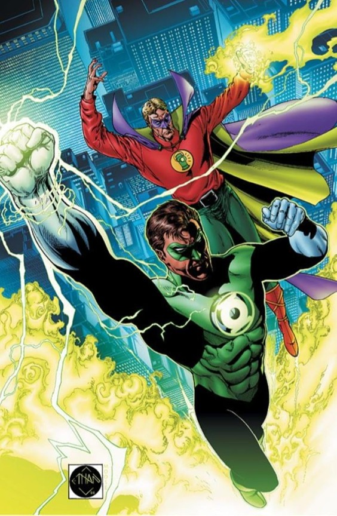

A Mirror in Emerald Light
The Green Lantern legacy, shaped first by Alan Scott and later by Hal Jordan, offers more than a tale of two superheroes; it reveals the transformation of American cultural identity across generations.
Alan Scott, with his mystical origins and clear-cut morality, emerged during an era that prized optimism, simplicity, and individual heroism. His stories aligned with a nation seeking reassurance during global conflict and economic uncertainty.
In contrast, Hal Jordan's journey reflected the upheaval of the Cold War, the public skepticism of authority, and the pressing social issues of a rapidly changing society. As both comics and readers matured, Jordan evolved from a loyal enforcer of order into a hero forced to confront institutional failure and cultural unrest.
Ultimately, the evolution of Green Lantern reveals the genre's enduring power: not simply to entertain but to reflect, challenge, and illuminate the values of the times in which its stories are told.